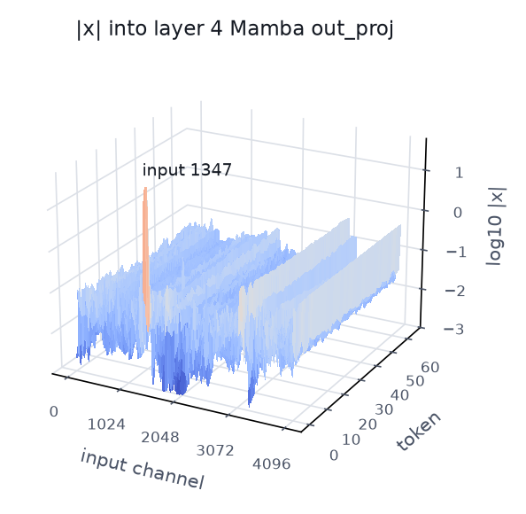
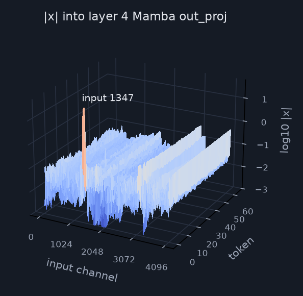
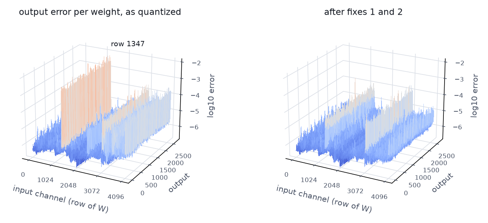
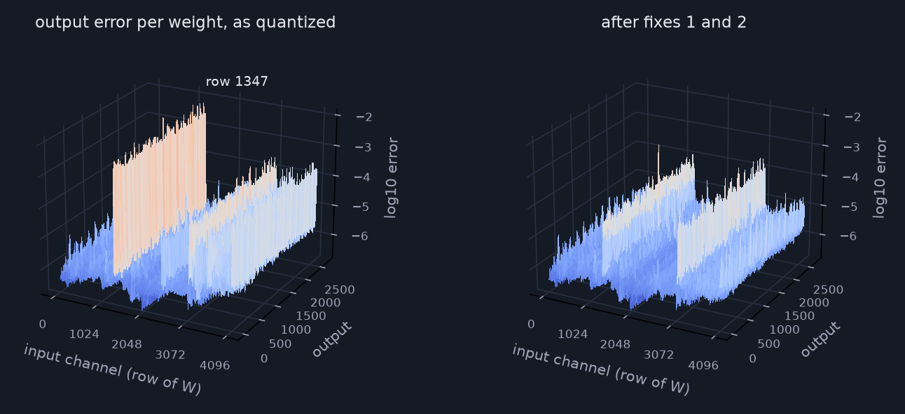

We quantize a lot of models. Usually it goes like this: take a checkpoint, squeeze it down to a few bits per weight, watch some benchmark fall off a cliff, then spend a week poking at the calibration set until it mostly comes back. It works, kind of. But it always feels like fixing a watch by shaking it.
So we tried something sillier. We handed a broken 3-bit checkpoint to an LLM agent, gave it a Python session with the weights loaded, and asked it to find what went wrong and fix it, by editing the weights directly and without fitting them to any data. On Nemotron-3.5-Lightning-30B-A3B it found two broken matrices out of 5,959, edited about one weight in 120,000, and closed most of the gap to the NVFP4 release.
The standard recipe is calibration plus post-training quantization (PTQ): run a small calibration set through the model, then let a method like GPTQ1 or AWQ2 use those activations to decide how to round the weights. You get a 2–4-bit model that fits on smaller devices and decodes faster, since decoding is memory-bound.
If you have pushed PTQ to aggressive bit widths, you have probably hit all three of these:
All three treat the quantized model as a black box you can only re-run with different inputs. We wanted to open the box.
Our starting point is recent weight-space programming work3: frontier LLMs can read and write neural network weights directly. In their Experiment 8 the agent makes Qwen3.5-0.8B much better by fixing its reasoning loops, editing 0.016% of its weights, with no gradients and no training loop.
Repairing a quantized checkpoint looked like a natural fit, with one big advantage: we know what every weight is supposed to be, because we have the higher-precision source to compare against. We gave the agent this brief:
This 3-bit checkpoint should behave like the NVFP4 model. Find what is broken and fix it inside the 3-bit format. You may run the model and read its weights and activations; you may not fit weights to data (no GPTQ, no least-squares refits, no training).
The agent starts from the finished 3-bit checkpoint, not from NVFP4. The NVFP4 weights are its reference: they tell it how far the 3-bit model is from where it should be, and every new 3-bit value it writes is the NVFP4 weight rounded again under a different rule. Whoever quantizes a model has its source weights, so this needs nothing extra.
Our test model is Nemotron-3.5-Lightning-30B-A3B, a Mamba + attention + mixture-of-experts model with 30B total and about 3B active parameters. The only source checkpoint is the NVFP4 release. We ran the brief from two 3-bit checkpoints of it, both made with GPTQ*: a poorly calibrated one and a well-calibrated one. Each was evaluated once on the test sets, before and after the agent's edits.
On the poorly calibrated checkpoint, two edited matrices close 64–86% of the gap on every benchmark, and the edited checkpoint ends up level with or ahead of the well-calibrated one. On the well-calibrated checkpoint the same kind of edit closes most of the MMLU and perplexity gap but adds only a few points on generation.
The gains are mostly better answers, not just shorter ones. A sample that hits the token cap almost never scores, so we split each gain into "finishes more often" and "better answers when it finishes":
Everything here was done by reading tensors and printing numbers in a Python session. We follow the agent on the well-calibrated checkpoint. The defect sits in the same weights in both checkpoints, and the same fixes repair both.†
Both models read the same held-out text, and at every token we compare their next-token distributions (KL divergence).
Code and prose are 14× worse than chat math. After all the repairs that ratio is about 7×, so part of it is normal, but twice the usual gap hinted that something specific was broken, and that it hit raw text harder than chat.
There are 5,959 quantized matrices, too many to read. So the agent put a whole kind of matrix back to NVFP4 and measured how much KL disappeared, then did the same one matrix at a time within the worst kind.
One matrix, layer 4's Mamba out_proj, holds about two thirds of the code and prose damage. Its shape: 4,096 inputs, 2,688 outputs.
First, what this matrix does. At every token the layer computes y = xW: x is a vector of 4,096 numbers coming out of the Mamba mixer, and y is 2,688 numbers passed on to the rest of the model. Each of the 4,096 positions in x is an input channel. Channel 1347 is position 1347 of x, the same position at every token. Each channel has its own row of W: the 2,688 weights it is multiplied by, one per output. So channel 1347 is an input, and row 1347 of W holds the weights that multiply it.
The weights alone don't say which inputs are large, so the agent ran the NVFP4 model on a few dozen held-out sequences (chat math and prose) and saved x at every token. Here are a few channels:
| |x| at token | 1 | 2 | 3 | 4 | 5 | 10 | 50 |
|---|---|---|---|---|---|---|---|
| channel 1347 | 19.3 | 59.8 | 54.0 | 0.006 | 0.006 | 0.027 | 0.008 |
| channel 4087 | 0.47 | 0.32 | 0.37 | 0.49 | 0.47 | 0.50 | 0.51 |
| channel 500 | 0.002 | 0.003 | 0.002 | 0.005 | 0.004 | 0.004 | 0.003 |
| median of all 4,096 | 0.002 | 0.002 | 0.002 | 0.004 | 0.004 | 0.006 | 0.007 |
Mean |x| at each token position over 29 sequences.
To compare all 4,096 channels with one number, the agent computed each channel's energy: the average of x² over all saved tokens. After the third token channel 1347 is as quiet as any other channel, but its first three values are so large that they dominate the average: its energy is 117,000× the median channel's. The next largest, channel 4087, reaches 1,366× by being steadily about 0.5. Here is the whole grid, all 4,096 channels by the first 64 tokens:


Energy matters because a weight's rounding error only becomes output error when it is multiplied by its input. A weight that is off by 0.002 adds 0.002 × 0.005 = 0.00001 to an output when its channel holds a typical value, and 0.002 × 60 = 0.12 when it is channel 1347 on token 2. So the agent scored each row of W by how much output error it causes: the squared rounding error of its weights times its channel's energy. One row carries most of it.
Channel 1347 is 20–60 on the first three tokens of every sequence and about 0.01 afterwards, like every other channel. Language models often keep a few such channels, huge on the first tokens and silent after; in attention models such channels are known as attention sinks4 or massive activations5. We call it the outlier channel. The model needs it; the problem is the row of weights that multiplies it.
Row 1347 of W holds one weight per output, 2,688 in all. Its median magnitude is 0.0006, twenty times smaller than the matrix's typical weight. Here is how the format stores a weight: each group of 32 weights shares one scale s, and each weight is stored as one of 8 levels times s, with levels ±0.41, ±1.25, ±2.25 and ±3.5. The 3-bit code picks the level; the scale sets how big the levels are. Each of the outlier channel's weights shares its group with large neighbours, and the scale is sized for them, so the smallest value the group can store, 0.41 × s, is about 0.003: five times the weight. Here is one of those groups, for output 101:
Dots are the 32 NVFP4 weights; ticks are the 8 values the group can store; lines show where nearest rounding sends each weight. Blue is the outlier channel's weight, W1347, 101 = 0.000496. Drag the group scale.
As quantized, this weight is stored as 0.002591 against a true 0.000496. On tokens 2 and 3, where input 1347 is about 50, that one product is 0.130 instead of 0.025, an excess of 0.105 in output 101; later in the sequence, where the input is 0.01, the same weight error adds only 0.00002. The error is in the weight, and the input decides how much it matters. Across all 2,688 outputs, 86% of the outlier channel's weights are under half the smallest storable value: median error 422%.
The explanation, in one sentence: the most active input in this layer is multiplied by weights stored about 5× too large, because the grid has nothing that small.
No 3-bit code can fix this weight: with this scale, nothing smaller than 0.0026 exists. So fix 1 changes the scale instead. The new scale is not searched for or fitted; it follows from three steps:
Here is the group from step 4, before and after:
| Output 101, inputs 1344–1375 | scale s | the 8 storable values | channel 1347's weight (true 0.000496) | largest weight (true 0.039) | group error |
|---|---|---|---|---|---|
| As quantized | 0.0064 | ±0.0026 ±0.0080 ±0.0143 ±0.0223 | 0.002591 (422% off) | 0.0223 | 1.2 × 10⁻⁴ |
| Fix 1 | 0.0012 | ±0.0005 ±0.0015 ±0.0027 ±0.0042 | 0.000486 (2% off) | 0.0042 (clipped) | 0.07 × 10⁻⁴ |
Group error: each weight's squared error times its channel's input energy, summed over the 32 weights.
The price. With the smaller scale, the largest value the group can store falls from 0.0223 to 0.0042, so 27 of the other 31 weights clip. Those weights are now much worse, yet the group's error falls 18×, because their channels' inputs are tiny: as quantized, 82% of the group's error came from channel 1347 alone. Press "Fix 1: store this weight exactly" on the figure above to watch the levels shrink and the large weights pile up at the edges.
Across the matrix. The same rule runs once per output: for each of the 2,688 outputs, it rewrites one scale (the group holding input 1347) and re-rounds the 32 codes under it. That is 2,688 scales and 85,286 changed codes. Only the NVFP4 weights, the 8 levels and the scale format go in; no data. Across all 2,688 outputs, the outlier channel's median weight error drops from 422% to under 2%.
On validation, prose KL fell threefold. But chat math got worse: GSM8K-dev went from 93.1% to 85.6%. A fix that only makes weights more correct should not make the model worse, so the explanation was incomplete, and the agent went back to reading.
What GPTQ does when it can't store a weight. GPTQ quantizes a matrix one row of W at a time while watching the layer's output on its calibration text. After it stores a row, it adjusts the rows it has not stored yet, so that on the calibration tokens the layer's output stays as close as possible to the original. When one row comes out badly, other rows absorb its error.
That is what happened to row 1347. Its weights were stored about 5× too big, which pushes outputs too high on tokens 1–3. GPTQ could not fix that row, so it pushed the outputs back down through other rows, ones whose inputs are also active on the first tokens. We call this bending a row: storing its weights far from their true values, often with the opposite sign, so that the row's contribution cancels row 1347's error. Three weights of row 3492:
| Row 3492 | true (NVFP4) | plain rounding | stored by GPTQ |
|---|---|---|---|
| weight a | −0.0134 | −0.0168 | +0.0471 |
| weight b | +0.0079 | +0.0049 | −0.0418 |
| weight c | +0.0342 | +0.0272 | −0.0272 |
Plain rounding keeps each weight close to its true value. GPTQ stored all three far away and with the opposite sign, on purpose.
Two wrongs make an approximate right, but only where GPTQ looked: on the first tokens of its calibration text. On every other token the bent rows are plain error. And once fix 1 stored row 1347 correctly, there was nothing left for them to cancel, so they became error everywhere, including on the chat math that this checkpoint's calibration had covered.
How the agent found the bent rows, without data:
Fix 2: undo the bending. Re-round those 86 rows to nearest, keeping their scales, so each weight goes back next to its true value (the blue dots on the right). Again no data goes in. The scan behind it needs only the stored weights and the NVFP4 weights, and it is cheap enough to run on all 5,959 matrices: its top three are the matrices the agent ended up repairing.


Which weights were edited, and the same error as a map you can hover:
The matrix's output error falls from 0.83 to 0.11. What remains at rows 1344–1375 is fix 1's cost, the clipped neighbours.
With layer 4 fixed, the agent repeated the loop. Layer 11's out_proj now stood out, although on the original checkpoint it had looked harmless: layer 4's damage had masked it. It had the same defect on input 3917, and the same two fixes repaired it. A third round found a smaller issue in layer 42's attention, where residual channel 2550 sits near a constant −72; there the agent used the one edit that reads activations, an RMS-weighted choice of one group's scale, which we approved explicitly. After that, no candidate edit helped. The same two rules, unchanged, then repaired the poorly calibrated checkpoint.
| Step | Data | What exactly |
|---|---|---|
| Measure and localize | validation text | KL to NVFP4 on held-out chat math, code and prose |
| Find the outlier channel | activations | per-channel input energy on a few dozen sequences; any text works |
| Fix 1 | none | scale = weight / level; round the group to nearest |
| Compensation scan, fix 2 | none | stored weights vs plain rounding of the NVFP4 weights |
| Layer 42 edit (well-calibrated only) | one number per channel | RMS activation weights one group's rounding error (approved exception) |
| Keep or revert | validation | KL, perplexity, MMLU-val, GSM8K-dev, LiveCodeBench Jan-2025; never test data |
Data showed where to look and decided keep or revert. On the poorly calibrated checkpoint, every value written came from the NVFP4 weights and the 8 levels alone; the well-calibrated one also has the layer 42 edit.
GPTQ's objective is fine. Its constraint is the problem: it fixes each group's scale from the group's largest weights before choosing codes. When a group also holds a tiny weight on a huge input, no choice of codes can store it, and GPTQ falls back on cancelling the error through other weights, fitted to the calibration tokens and wrong on most others.
That turns into two cheap tools. A repair pass needs no data: scan for compensation, find the outlier channel in one forward pass, apply both fixes. And constrained GPTQ builds the fix into the quantizer: give such groups a scale that can hold the outlier channel's weight, and quantize those weights first. It uses calibration data like ordinary GPTQ, and it ties the agent edits on every test benchmark:
The whole repair took three rounds of the loop and about 30 tested edits, and kept three: two fixes for the outlier channels and one small one in attention. It rewrites existing quantized codes and scales, so the model keeps the same size, format and kernels. It is a step after quantization that works with any quantizer: all it needs is the checkpoint, the higher-precision reference, and a few prompts to read activations and validate on. And because each edit comes with a reason, it tells you what the quantizer got wrong.
Two things next. First, scale the agent editing out: many agents working in parallel on many matrices and models, a swarm instead of one session. Second, start earlier: give agents the full-precision checkpoint and let them produce the quantized model themselves, instead of repairing one after the fact.
† Case-study numbers are measured on the well-calibrated checkpoint. The poorly calibrated one has the same defect in the same weights (input channels 1347 and 3917, median errors 422% and 139%), with 67 compensation rows in layer 4 instead of 86. The surprise in step 5 happens only on the well-calibrated checkpoint: on the poorly calibrated one, fix 1 alone already does the work (GSM8K-dev 74.0% → 94.9%) and fix 2 is neutral (93.6% with both, within noise).
* Both checkpoints use the same 3-bit format (8 levels per matrix, an FP8 scale per 32 weights). The poorly calibrated one was calibrated on a small, narrow set: 64 code files plus a few hundred model-generated reasoning traces and MMLU answers; the well-calibrated one on an equal mix of six domains (code, math answers, prose, chat, multilingual chat, knowledge questions). Neither calibration set overlaps the test sets.